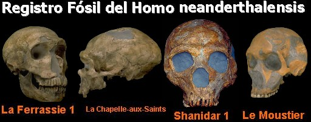

Cerca de la ciudad alemana de Düsseldorf se halla el valle Neander Tal, lugar en el que en 1856 se encontró por vez primera el esqueleto de un ser humano diferente a nuestra especie. El estudio de este esqueleto llevó a al anatomista irlandés William King a definir en 1864 la primera especie humana fósil que la civilización llegara a conocer: el Homo neanderthalensis. Si bien es cierto que el esqueleto de Neander Tal no fue el primer el resto fósil hallado de un neandertal, fue éste el que dio inicio al estudio de la especie humana extinta mejor conocida hasta la fecha. En la actualidad los paleoantropólogos cuentan con restos de al menos 500 individuos encontrados en Europa, Oriente Próximo y Asia.
Los neandertales fueron humanos que utilizaron el fuego, usaban herramientas y que muy probablemente enterraban a sus muertos. Estos seres humanos no son antecesores de nuestra especie. Son una especie humana que evolucionó en Europa durante el Pleistoceno, llegando a poseer numerosas características que le permitieron sobrevivir a un clima muy frío e inhóspito.
Cuando se ve la literatura de los creacionistas es patente el grado de ignorancia que manejan los fundamentalistas. En muchos casos ignoran la cantidad de fósiles que hay de esta especie. También olvidan su ubicación geográfica y temporal, lo cual es una poderosa prueba de la evolución (entendiendo evolución biológica como cambio en las frecuencias de genes de una población a través del tiempo). El grado de descaro de los creacionistas es tal, que en uno de sus folletos (el de Chick Publications) se puede leer:
HOMBRE DE NEANDERTHAL: En el congreso internacional de zoología (1958). El doctor A. J. E. Cave dijo que su examen de este famoso esqueleto hallado en Francia hacía más de 50 años, mostró que era un hombre anciano que sufría de artritis.
Esta afirmación transmite la idea que la única prueba existente del hombre de neandertal es un único esqueleto, que sólo es diferente de los humanos actuales, porque presentaba un severo caso de artritis. Este argumento es común en casi todas las publicaciones creacionistas. Si bien es cierto que el esqueleto de la francesa localidad de La Chapelle-aux-Saints presentaba un severo caso de artritis esto no significa que los neandertales no existieron. El esqueleto de La Chapelle-aux-Saints fue estudiado por Marcellin Boule quien publicó sus resultados entre 1909 y 1912 y debido a este trabajo se mantuvo por décadas la imagen bestial de los neandertales. Es curioso notar que los creacionistas tienen una memoria selectiva en la que recuerdan algunas declaraciones que parecen servir a sus propósitos (como la de A. J. E. Cave), pero ignoran el 99% de estudios y descubrimientos adicionales.
Como se mencionó anteriormente los restos de neandertales se conocen de un amplio sector de Europa y Asia. Por esto parece deshonesto que los creacionistas hagan parecer que toda la evidencia sobre esta especie se basa en el esqueleto artrítico de La Chapelle-aux-Saints, cuando se tienen muy buenos fósiles de España, Portugal, Francia, Alemania, Croacia, Italia, Siria, Israel, Uzbekistán e Irak.
Otro aspecto que se omite en las publicaciones creacionistas es el rango de tiempo que ocuparon los neandertales. Estos seres humanos vivieron en Europa desde hace 200,000 años hasta hace 30,000 años, dentro de la época del Pleistoceno. Los fundamentalistas religiosos engañan a sus fieles al decirles que los neandertales fueron “seres antediluvianos” —al igual que los dinosaurios y las demás formas de vida extinta— pero si fuera así, ¿Por qué los restos fósiles de neandertales sólo se encuentran en sedimentos del Pleistoceno y los de los dinosaurios están en rocas mucho más antiguas? ¿Por qué nunca aparecen mezclados los restos fósiles de los dinosaurios con los de los neandertales o cualquier otra especie humana? En este punto los creacionistas sólo guardan silencio.
Los neandertales evolucionaron en Europa a partir de las poblaciones de Homo heidelbergensis las cuales ya mostraban huesos robustos y profundos puntos de inserción para los músculos. Tal aspecto también es omitido por los creacionistas. A nivel físico es fácil demostrar la diferencia entre las dos especies. Los neandertales presentaban un cuerpo más rollizo que los humanos modernos, esto les permitía mantener de forma más eficiente el calor corporal; las extremidades también eran relativamente más cortas que los Homo sapiens, lo que ayudaba a mantener una baja relación superficie-volumen que a su vez es una adaptación para climas fríos.
A parte de las características del esqueleto postcraneal debe mencionarse que es en el cráneo donde se presentan las principales características que permiten distinguir los neandertales de cualquier otra especie humana. El cráneo de los neandertales presenta un torus supraorbitario muy marcado (torus es el reborde del hueso), principalmente en el centro, y a los lados forma dos arcos que continúan el contorno de los ojos y contienen grandes senos frontales. La cara es muy prognata (prognatismo es la proyección de la cara hacia delante), la frente es baja, y el cráneo es alargado y proyectado hacia atrás. Los neandertales tenían una abertura nasal muy grande, y a nivel de la dentición es de notar que la mandíbula de los neandertales mostraba un espacio tras el molar que técnicamente se conoce como “espacio retromolar” el cual no existe en los humanos modernos.

A la izquierda se observa el esqueleto de un humano moderno (Homo sapiens) junto al de un neandertal (Homo neanderthalensis). Los neandertales tenían una forma del cuerpo que les ayudaba a conservar el calor. A la derecha se observan algunas de las diferencias anatómicas entre el cráneo de un neandertal (arriba) y el de un humano moderno (abajo).
El neurocráneo es alargado y bajo en los neandertales vs. alto y redondeado en H. sapiens;
La frente es baja en los neandertales y alta en los humanos modernos;
El torus supraorbitario es muy marcado y arqueado en H. neanderthalensis mientras que se presenta poco desarrollado en H. sapiens;
Las orbitas oculares son grandes en los neandertales mientras que en los humanos modernos son pequeñas;
En los neandertales no existe la “fosa canina”;
El prognatismo en los neandertales es “medio-facial” mientras que en los humanos modernos es maxilar;
Los neandertales carecían de mentón;
Los humanos modernos carecen de “espacio retromolar” el cual se presentaba en los neandertales.
Los creacionistas también mencionan que los neandertales tenían un cerebro de tamaño similar al de los humanos modernos, por lo que afirman que esto es prueba de que no ha habido evolución. Respecto a este punto hay que mencionar que los neandertales no se consideran actualmente como antecesores del Homo sapiens, sino como se mencionó anteriormente, una especie que evolucionó aparte en Europa durante el Pleistoceno. Por otra parte, los creacionistas como muchas personas asumen que un tamaño de cerebro similar al de los humanos modernos significa una igualdad de capacidades intelectuales, pero es probable que esto no sea así. Los neandertales tenían cerebros grandes puesto que tenían cuerpos grandes. La relación entre el tamaño del cuerpo y el tamaño del cerebro (índice de encefalización) es mayor en los humanos modernos que en los neandertales.
Los genetistas también han realizado esfuerzos para comprender la relación entre los neandertales y los humanos modernos. De los restos del famoso neandertal de Feldhofer los científicos lograron obtener muestras de ADNmt (ADN mitocondrial). Estas secuencias de ADN al ser comparadas con las de seres humanos modernos mostraron que tenían diferencias significativas como para suponer que los neandertales y los humanos modernos fueron especies distintas.
Sin embargo algunos científicos creían que los neandertales se cruzaron con los humanos modernos que hace 40.000 años llegaron a Europa (los famosos hombres de Cro-Magnon). Afortunadamente este interrogante se ha solucionado gracias al hallazgo de un infante neandertal de hace 29,000 años (una edad cercana al final de ésta especie que ocurrió hace 30,000 años). Los restos fueron hallados hace 13 años en la cueva de Mezmaiskaya, a 60 km al este de la costa del Mar Negro, en el norte del Cáucaso a 1,300 m sobre el nivel del mar.
El Dr. William Gooding, uno de los investigadores del Centre Human Identification de la Universidad de Glasgow analizó el ADN de los huesos extraídos de una de las rodillas del fósil y llegó a la conclusión que los neandertales poco o nada contribuyeron a nivel genético, lo cual implica que ellos no son antecesores de los humanos modernos. El material genético de este infante fue comparado con el ADN extraído del neandertal de Feldhofer, encontrado en el Valle de Neander en Alemania. La conexión familiar fue descubierta, de la misma manera que la diferencia significativa con los seres humanos actuales.
A pesar de los alegatos sin sentido de los creacionistas los restos de al menos 500 neandertales y las secuencias genéticas halladas confirman la existencia de una especie humana diferente a la nuestra, la cual fue fruto de la evolución biológica en el hostil mundo pleistocénico. Como bien puntualizaba el paleontólogo George G. Simpson:
(Los creacionistas) prefieren el conocido truco de la avestruz: si dejas de mirar directamente alguna cosa, ésta dejará de existir.
Volver a la sección Ciencias de los orígenes
Comentarios
Comments powered by Disqus